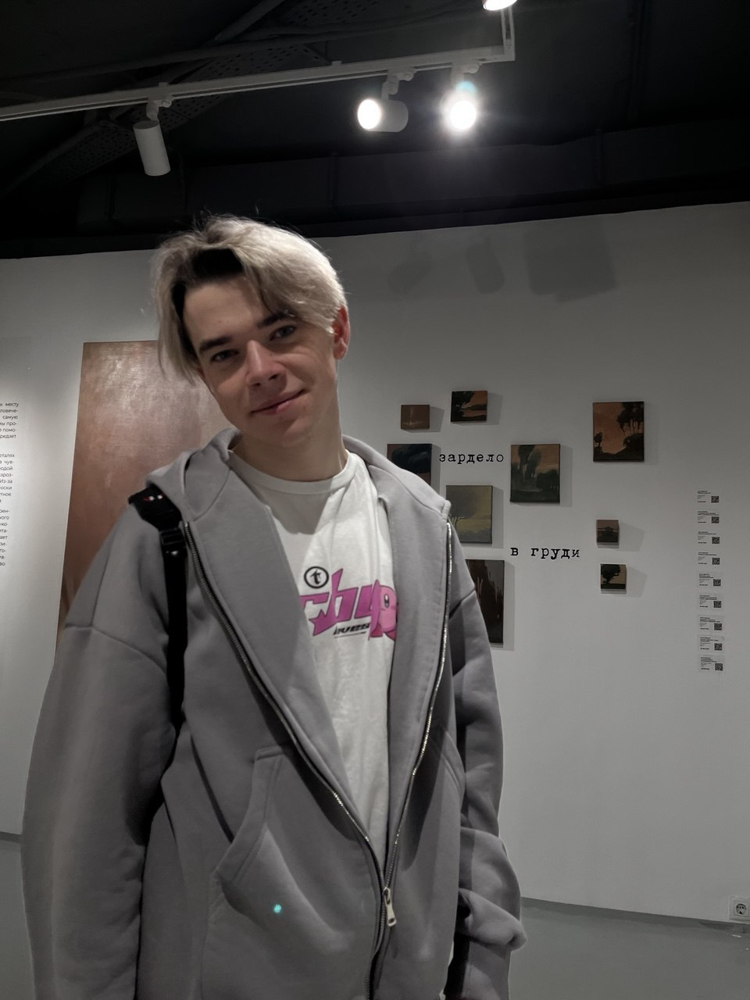

Над проектом работает команда из трёх человек. Роли распределены по ключевым направлениям: архитектура и вёрстка, дизайн и стилизация, JavaScript и тестирование.
Команда проекта — состав и роли
Над проектом работает команда из трёх человек. Роли распределены по ключевым направлениям: архитектура и вёрстка, дизайн и стилизация, JavaScript и тестирование.
